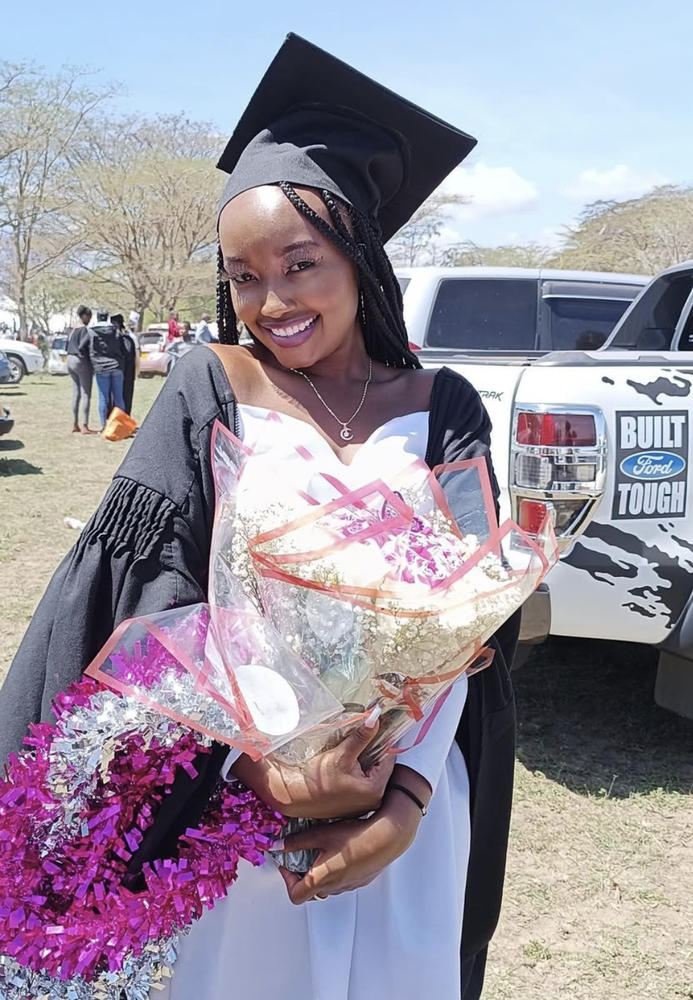
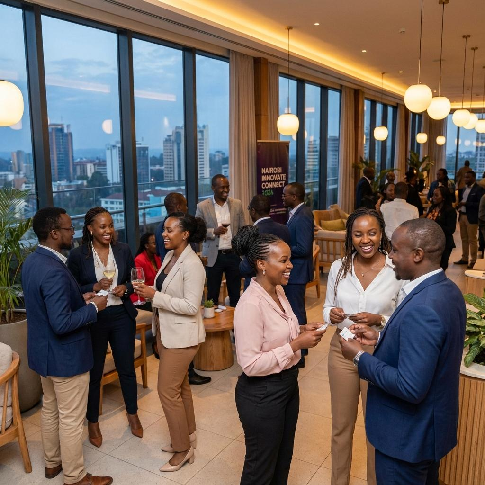

2026
UNDERGRADUATE DEGREE
In progress
BA Communication & Media Studies
Kenyatta University
Expected completion: December 2026.
COMMUNICATIONS / MEDIA / PUBLIC RELATIONS
I'm Darlene Gathumbi — a communication and media professional exploring the intersection of storytelling, people and culture.

I enjoy the space where creativity, communication and people meet.
My experience across media, event support, research and digital communication has helped me understand the importance of clear messaging, thoughtful planning and audience awareness.
From supporting media teams to contributing to events and researching information, I approach each opportunity with curiosity, adaptability and a willingness to learn.
I'm interested in continuing to grow in communications, media relations, content and public-facing creative work.
Academic knowledge, practical skills and a commitment to continuous learning.
Kenyatta University
Expected completion: December 2026.
Multimedia University of Kenya
Completed December 2022 · Award: Credit.
Practical exposure across communications, media research, event operations, creative production and broadcasting.
Supported event management, social media activities and media relations, gaining practical exposure to communications work.
Served as a VIP/VVIP usher under Anchor Bay Events, supporting guest experience and professional event operations.
Contributed to social media activities and supported the 7 PM and 9 PM news livestreams.
Worked on an NCBA Loop media list and research relating to Bowmans, building experience in media research and information gathering.
Gained experience in event videography and graphic design, exploring visual communication and creative production.
Contributed voice-overs and gained early exposure to broadcast communication and voice delivery.
Exploring the planning, teamwork and creative thinking that help messages reach people.
 01
01
Research, coordination and collaborative work that support clear communication.
 02
02
Professional event environments, guest support and attention to detail.

03Academic study, volunteering and practical experience that support professional growth.
Illustrative photographs are used where actual work samples are not available. They do not represent verified projects completed by Darlene.
A developing toolkit grounded in communication, creativity, collaboration and practical experience.
Background research & report writing
↗Audience-focused communication
↗Event planning & execution
↗Teamwork & collaboration
↗Problem-solving & analysis
↗Microsoft Office
↗Life beyond work and the classroom shapes the perspective, empathy and curiosity I bring to the work I do.
The people and experiences that matter most help keep my work human.
I'm open to meaningful opportunities, collaborations and conversations around communication, media and creative work. I'd love to hear from you.
wangecidarlene@gmail.com ↗